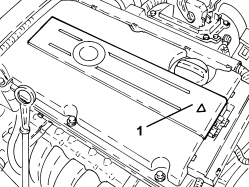

1016A40 IGNITION COIL COVER ON CYLINDER HEAD - R+R
- Path
- Procedures > 10 ENGINE > 1016 CYLINDER HEAD/S > 1016A TAPPET COVERS > 1016A40 IGNITION COIL COVER ON CYLINDER HEAD - R+R
- Kind
- repair procedure (removal / refitting; the operation number is the code)
- Applies to
- engines: 1.8; all production periods
- Interactive page
- https://sloeber94.github.io/elrnDB-fCrm/en/#/194002907
Applies to: engines: 1.8; all production periods
 Removing
Removing
 Refitting
Refitting1. Remove the coil cover from the retaining clips by lifting it up from the edge of the gearbox as indicated by the arrow.

Applies to: engines: 1.8; all production periods
Refitting
Removing- Place the coil cover in its housing and secure it using the retaining clips.